Emergency SOS
Send emergency information and available location data to responders in seconds.
RecoveryBoard + RescueMesh connects citizens, rescue teams and authorities through one real-time disaster response and recovery platform.

Six connected capabilities — from the first SOS to the final recovery milestone.
Send emergency information and available location data to responders in seconds.
Report incidents with precise geographical information from your device.
Connect verified incidents with the right rescue teams and resources.
Track every incident from reporting to resolution on one live board.
Highlight critical recovery requirements with transparent, rule-based priority scoring.
Connect citizens, responders and authorities in one shared operational picture.
Six accountable steps. Every transition is recorded, role-checked and visible to everyone who needs it.
A citizen or field officer files a damage report with location, severity and affected people.
An authority verifies the report before it enters the response queue.
A transparent rule-based engine scores severity, people affected, dependencies and resources.
The right team and resources are reserved with an expected completion time.
The rescue team updates status on the ground; blocked dependencies unblock automatically.
The task is resolved, resources are released and the recovery record is closed.
The RecoveryBoard shows what needs attention, why it needs attention, who is handling it, what resources are required, what is blocking recovery, and what has already been resolved.
Every task carries a 0–100 priority score with human-readable reasons and a per-component breakdown — no black box.
Tasks can depend on each other — a blocked road stops the electricity repair. Circular dependencies are rejected automatically.
Ambulances, teams and equipment are tracked with availability; assignment reserves them and resolution releases them.
If you are in danger, use the emergency SOS in your dashboard to share your situation and location, or file a damage report so responders can be dispatched.
RecoveryBoard + RescueMesh is a disaster emergency, rescue coordination and recovery management platform. It gives citizens a fast way to report, rescue teams a clear operational picture, and authorities a transparent view of recovery priorities, dependencies and resource requirements for every damaged location.